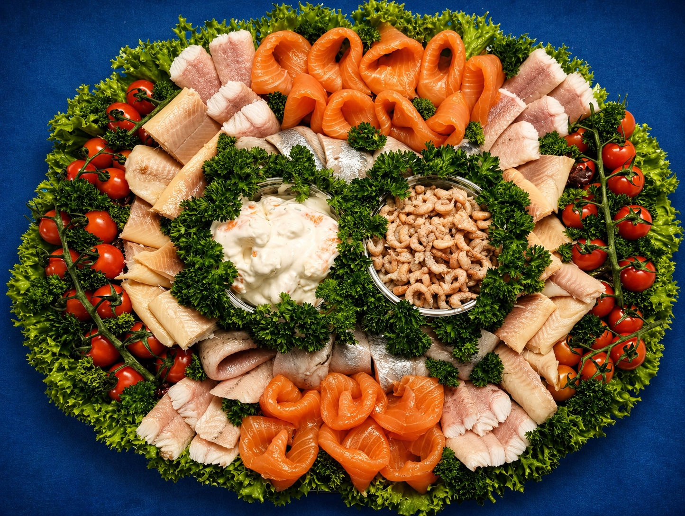

Platte 01
Große Genussplatte
Eine reichhaltige Auswahl für Feiern, Familienfeste und besondere Anlässe – frisch angerichtet mit Lachs, Garnelen und Fischspezialitäten.
- Ideal für mehrere Personen
- Sorten nach Wunsch anpassbar
- Persönliche Beratung möglich